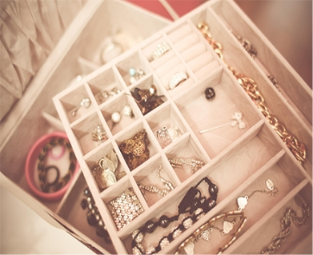
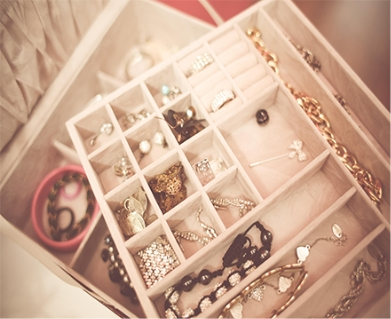

An Wow Feature
The gentlemen who rented the room would sometimes take their evening meal at home in the living.

The gentlemen who rented the room would sometimes take their evening meal at home in the living room that was used by everyone, and so the door to this room was often kept closed... in the evening. But Gregor found it easy to give up having the door open, he had, after all, often failed to make use of it when it was open and, without the family having noticed it, lain in his room in its darkest corner. One time, though, the charwoman left the door.
The gentlemen who rented the room would sometimes take their evening meal at home in the living.

The gentlemen who rented the room would sometimes take their evening meal at home in the living.

The gentlemen who rented the room would sometimes take their evening meal at home in the living.
The gentlemen who rented the room would sometimes take their evening meal at home in the living room that was used by everyone, and so the door to this room was often kept closed in the
JIMMY JEFFERSON
21/08/2013
GAIL GUTIERREZ
21/08/2013
MASON JOHNSTON
21/08/2013
The gentlemen who rented the room would sometimes take their evening meal at home in the living room that was used by everyone, and so the door to this room was often kept closed in the
 

The gentlemen who rented the room would sometimes take their evening meal at home in the living room that was used by everyone, and so the door to this room was often kept closed in the
110
successful project
25
awesome clients
30
open source plungins
13
open source themes
Travel / 21st March, 2014
The office assistant was the boss's man, spineless, and with no understanding. What about if he reported sick? But that would be extremely strained and suspicious as in fifteen years of service Gregor had never.
Gadget / 3rd March, 2014
The office assistant was the boss's man, spineless, and with no understanding. What about if he reported sick? But that would be extremely strained and suspicious as in fifteen years of service Gregor had never.
Travel / 21st March, 2014
The office assistant was the boss's man, spineless, and with no understanding. What about if he reported sick? But that would be extremely strained and suspicious as in fifteen years of service Gregor had never.
Travel /21st March,2014
Personal /21st March,2014
Personal /21st March,2014